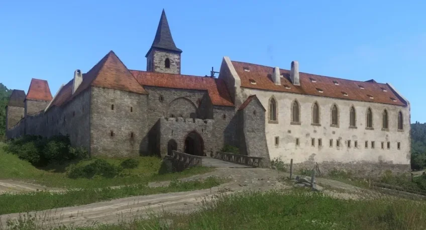

Visit Sasau Region From KCD 1
Sasau region from the first game has almost identical landscape in real life. One of few things which is different is that Skalitz is further away and that the river itself is a bit under a different angle in some spots. You can still visit Sasau Monastery, a structure which looks most similar today as it looks in the game. Although they do not look the same today you can still visit some of the churches from the in game towns and villages. There are also ruins of the Talmberg, Skalitz and lower Rattray castles still available today, vit all the villages and towns in the area having the same names as in game.
Visit Trosky & Kuttenberg Regions From KCD 2
KCD 2 offers two regions you can visit. Although they are not next to each other it is still not too far away. It will take you about 1 hour and 20 minutes to get from Trosky Region to Kuttenberg Region. In the Trosky Region the predominant thing to see there is the castle, which is already ruined today but it is still impressive. From the nature the most recognizable will be Apolonia and Rock Tower pond, where the second game begins. In the Kuttenberg Region you can ofcourse visit the city itself, but there is much more than just that. In the city itself you can see some of the landmarks which were already in the game like Gothic Stone Fountain, Italian Court, town square, and all the churches, with Saint Barbara Cathedral dominating them all. Outside the city you can also visit the Sedletz Monastery and the town around which again have the same names as in the game.
About Us
Since the hit of the first Kingdom Come: Deliverance people wanted to visit the real life location where the games takes place. Although the landscape didn't change much since the early 15th century some buildings did. It is not the easiest to find other popular locations like camps and lonely houses. That's why we decided to help people to find these places more easily.